전체 영상의 파렛트 segmentation: 기존 저장 출력 비교
모든 그림은 예측값입니다. 실사 pixelGT가 없어 IoU/정답 mask라고 주장하지 않습니다. 전체 RGB512 입력에서 만든 raw32 logit을 원본 HW로 pixel-center bilinear(border, align_corners=False) 보간한 뒤 sigmoid, 고정 p(target)≥0.5로 표시했습니다. 회색/검정 영역은 배경·콘·내부 구멍을 포함할 수 있으며 외부 가림 E와 동일하지 않습니다. 새 추론·학습·threshold 조정은 없습니다.
CLIP/Surgery/DeCLIP 비교는 backbone과 사전학습 차이가 함께 있습니다. 동일 EVA original→CSA→DeCLIP 대조 그림을 별도로 제공합니다. 모든 head는 기존 합성 M4 binary supervision으로 학습한 head이며 text-prompt zero-shot 분할을 새로 실행한 결과가 아닙니다.
실제 RGB cutout
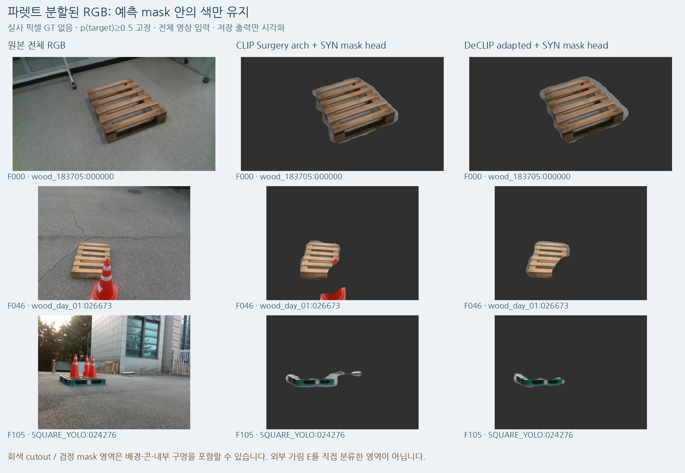
예측 binary mask 자체
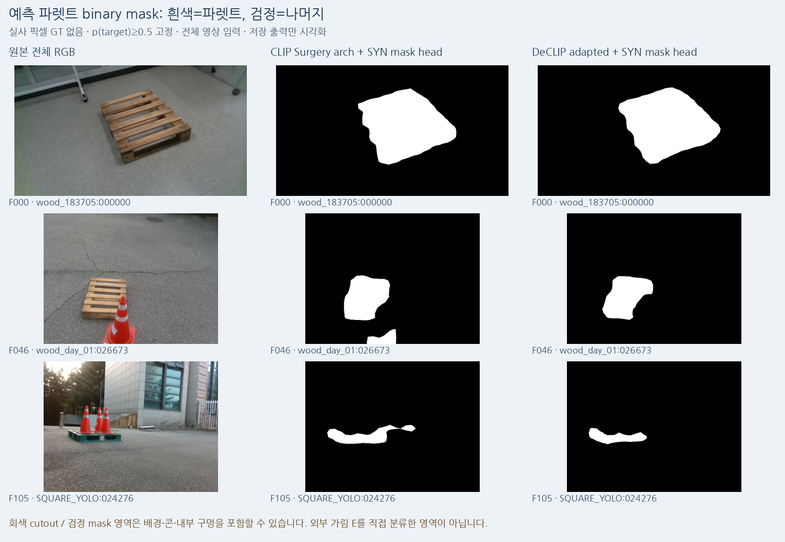
사례/이미지 경로 · 정확한 선택10 raw32 FP32 NPZ · 브라우저용 raw32 JSON · 기존84 RGB 목록
F000 · wood_183705:000000
CLIP / Surgery / DeCLIP 비교 · EVA 동일 backbone 대조 · 원본 전체 RGB
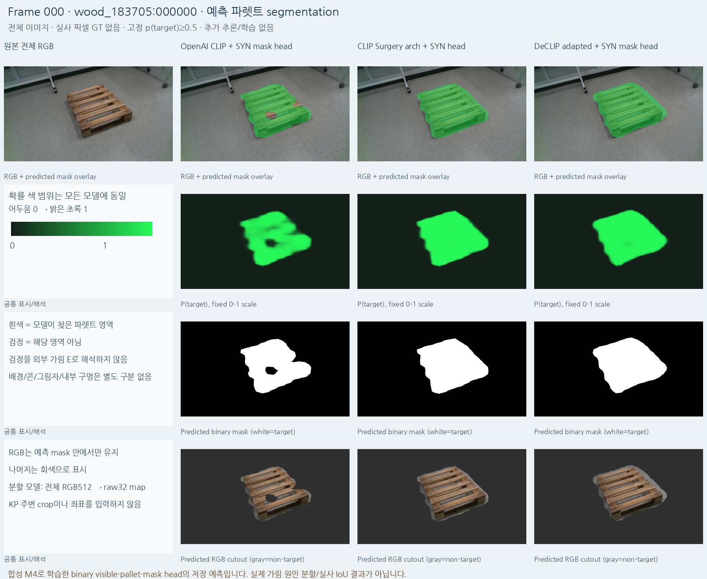
F025 · wood_day_01:002010
CLIP / Surgery / DeCLIP 비교 · EVA 동일 backbone 대조 · 원본 전체 RGB
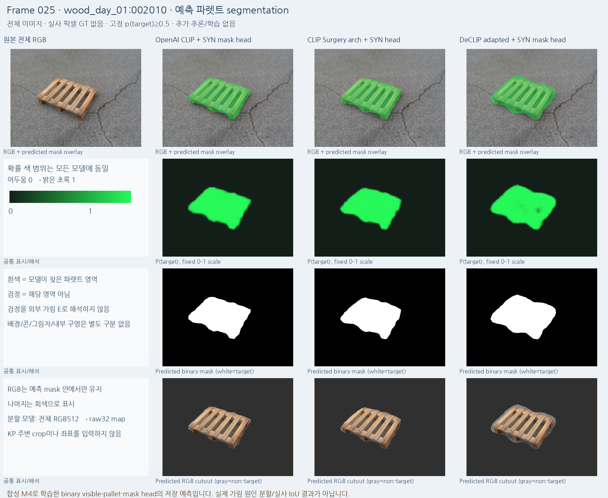
F046 · wood_day_01:026673
CLIP / Surgery / DeCLIP 비교 · EVA 동일 backbone 대조 · 원본 전체 RGB
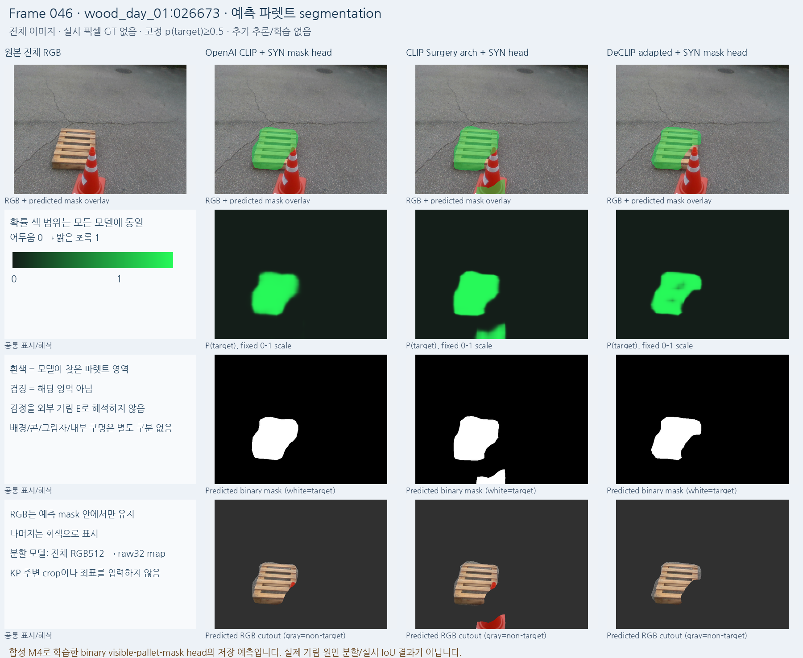
F100 · wood_night_01:033297
CLIP / Surgery / DeCLIP 비교 · EVA 동일 backbone 대조 · 원본 전체 RGB
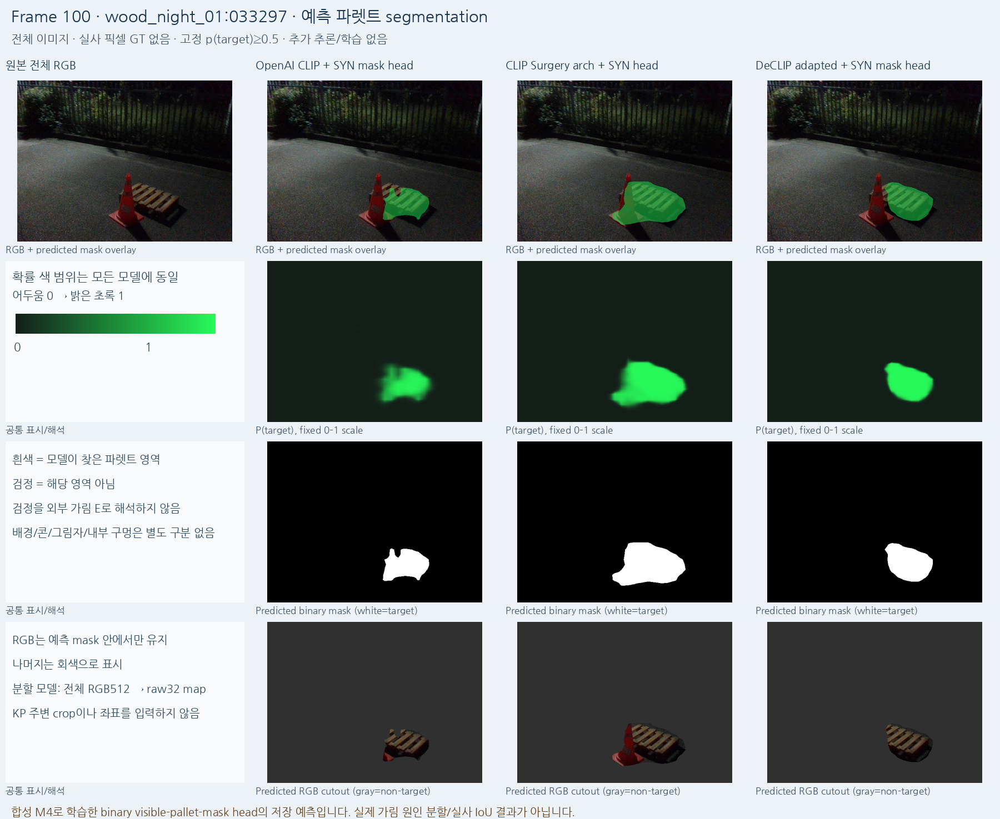
F105 · SQUARE_YOLO:024276
CLIP / Surgery / DeCLIP 비교 · EVA 동일 backbone 대조 · 원본 전체 RGB
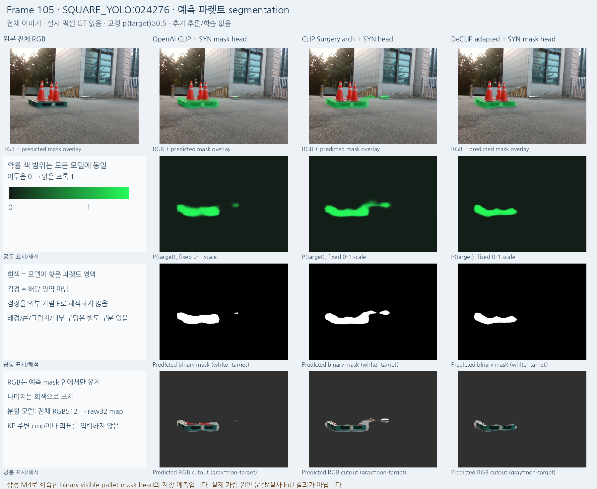
F106 · SQUARE_YOLO:024410
CLIP / Surgery / DeCLIP 비교 · EVA 동일 backbone 대조 · 원본 전체 RGB
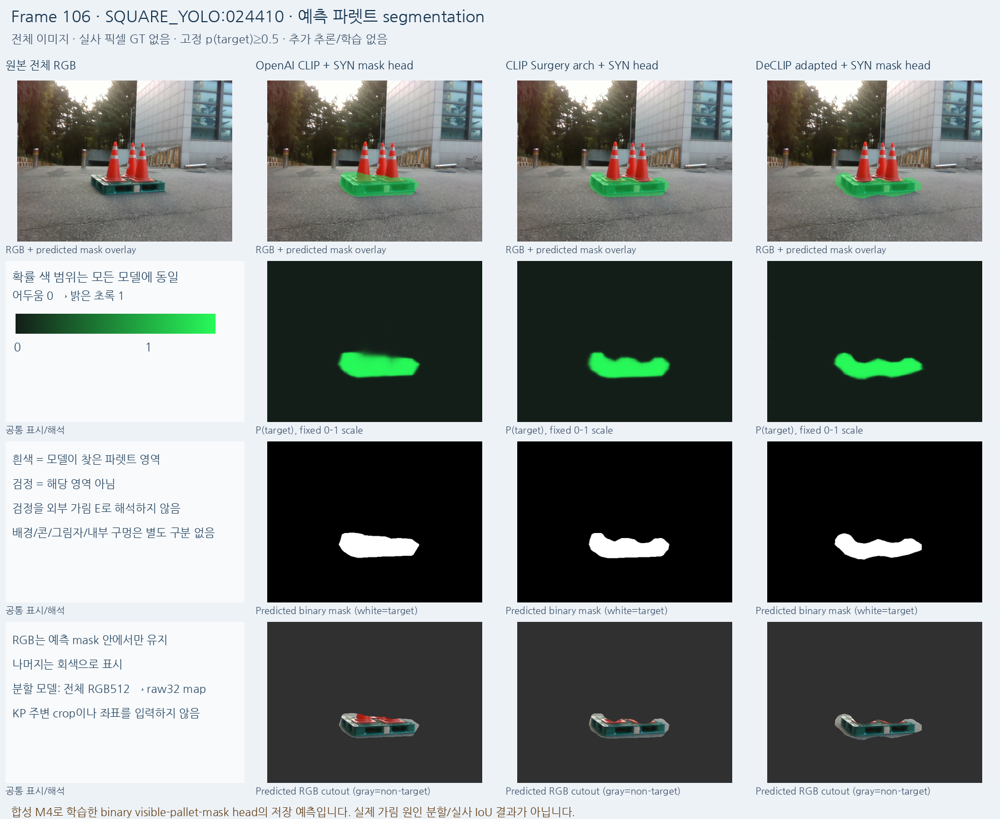
F113 · SQUARE_YOLO:025162
CLIP / Surgery / DeCLIP 비교 · EVA 동일 backbone 대조 · 원본 전체 RGB
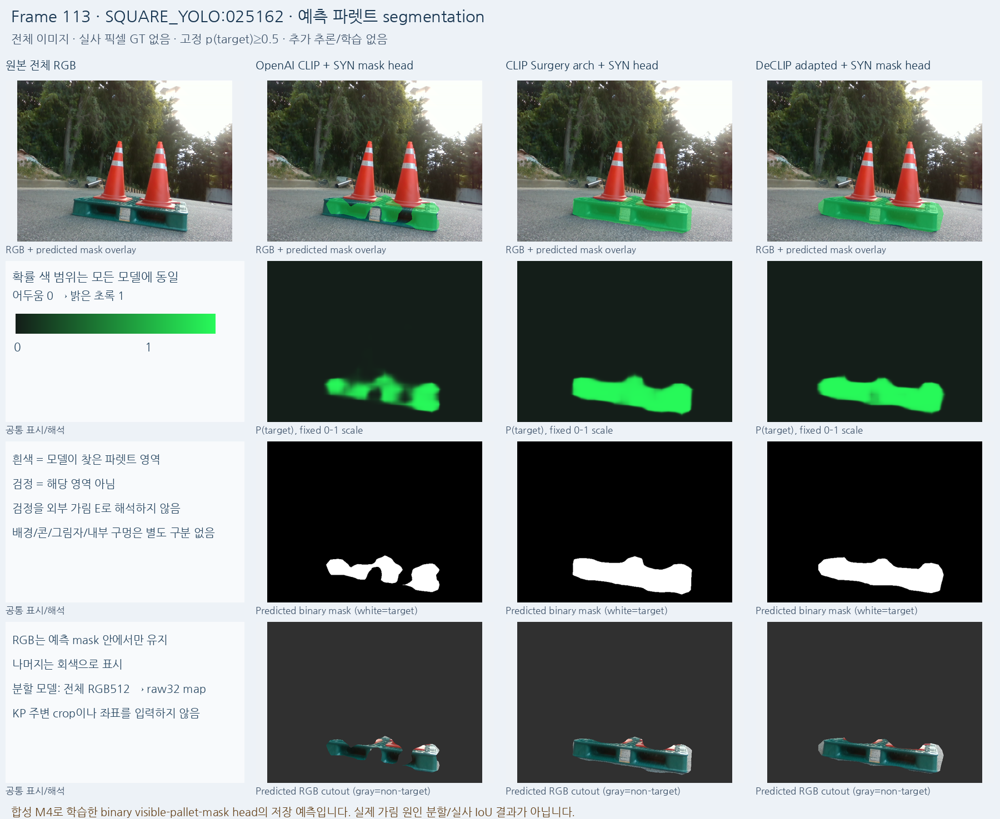
F124 · SQUARE_YOLO:027085
CLIP / Surgery / DeCLIP 비교 · EVA 동일 backbone 대조 · 원본 전체 RGB
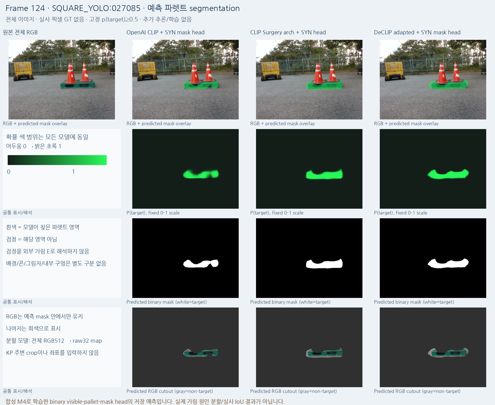
F189 · SQUARE_YOLO:030379
CLIP / Surgery / DeCLIP 비교 · EVA 동일 backbone 대조 · 원본 전체 RGB
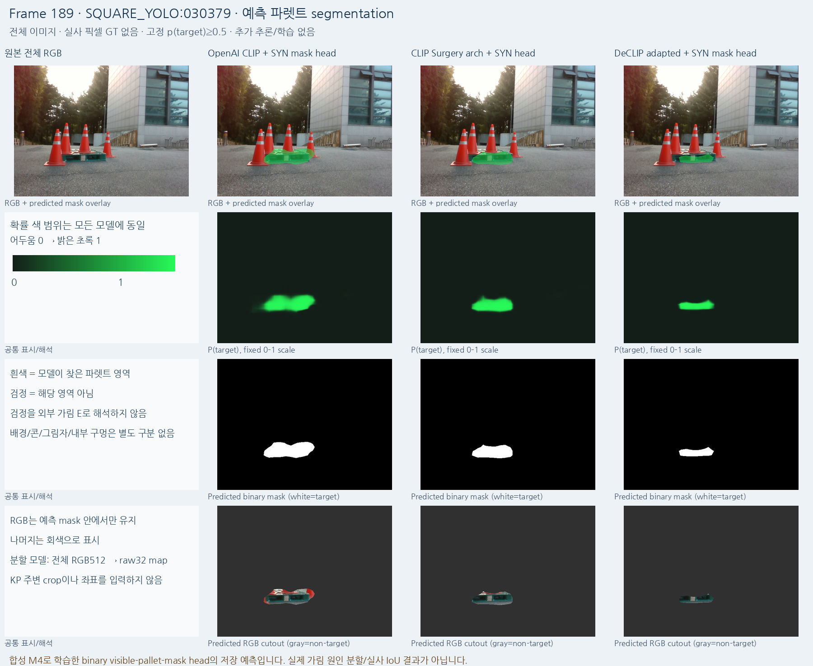
F083 · wood_night_01:031298
CLIP / Surgery / DeCLIP 비교 · EVA 동일 backbone 대조 · 원본 전체 RGB
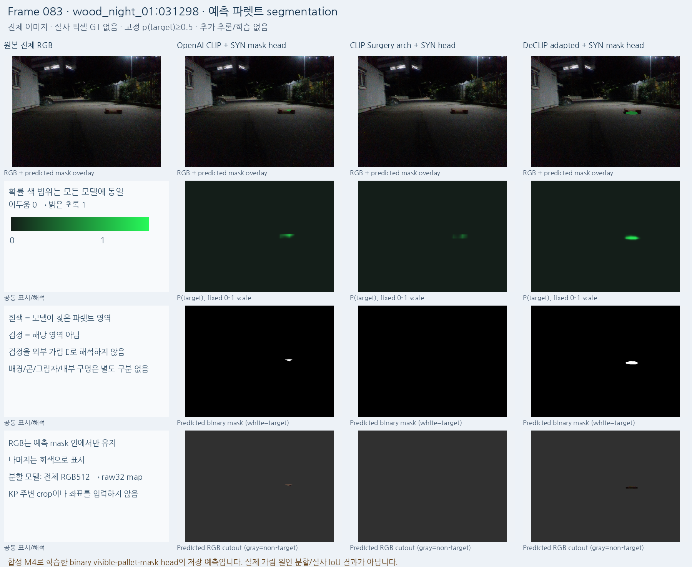